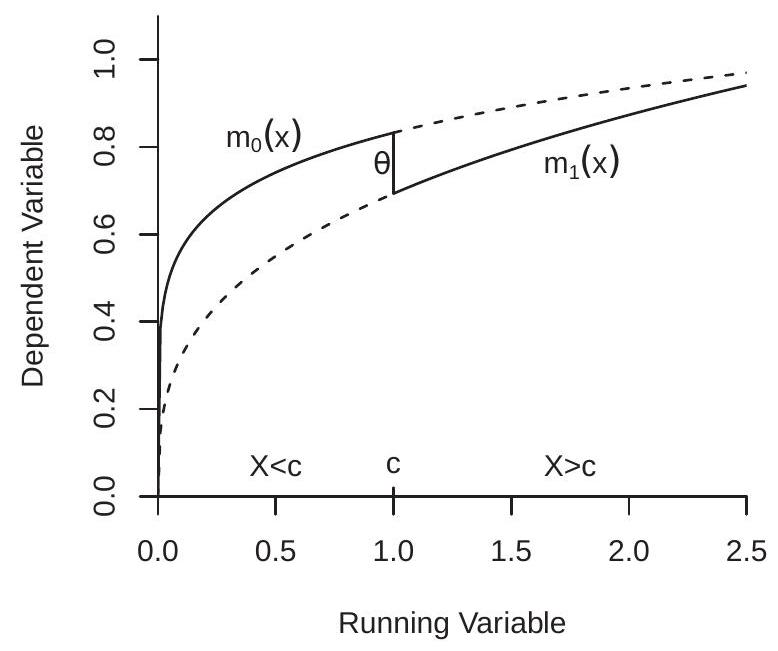
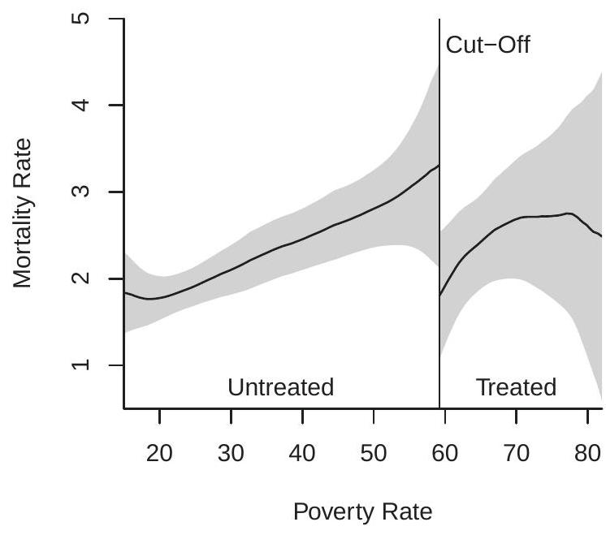
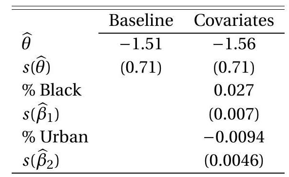
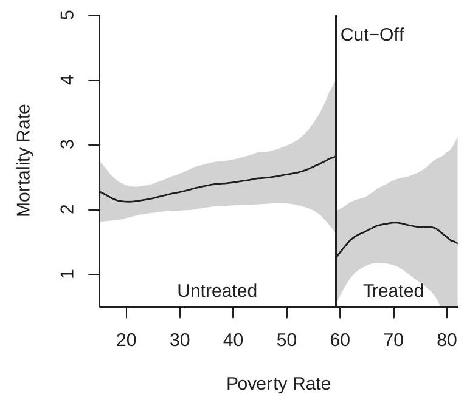
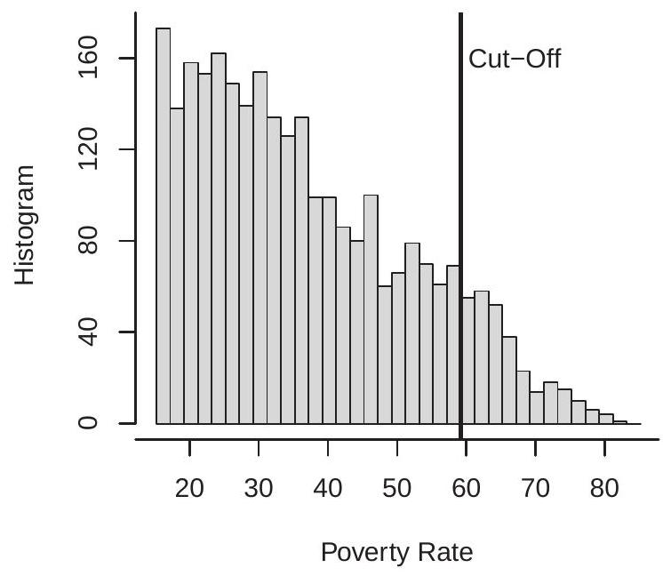
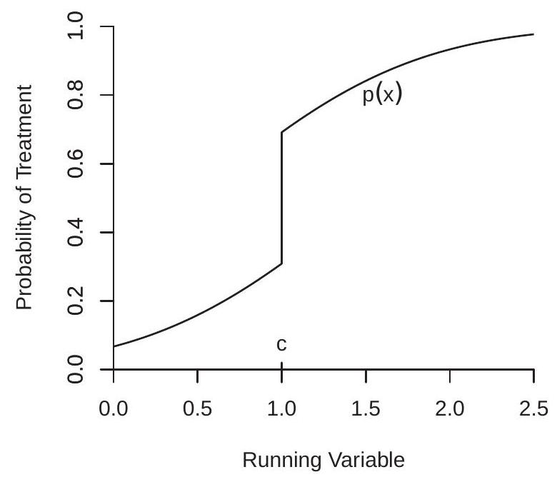
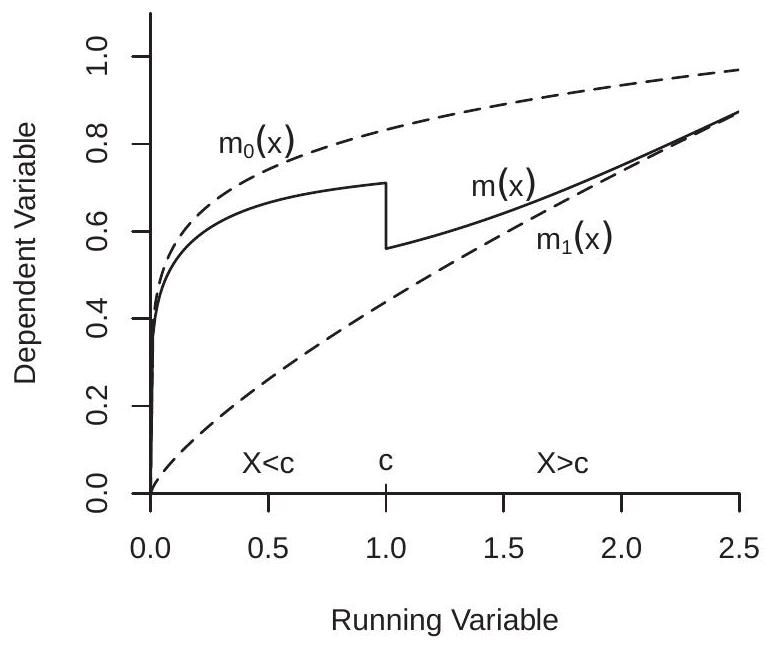

20 Regression Discontinuity
20.1 Introduction
One of the core goals in applied econometrics is estimation of treatment effects. A major barrier is that in observational data treatment is rarely exogenous. Techniques discussed so far in this textbook to deal with potential endogeneity include instrumental variables, fixed effects, and difference in differences. Another important method arises in the context of the regression discontinuity design. This is a rather special situation (not at the control of the econometrician) where treatment is determined by a threshold crossing rule. For example: (1) Do political incumbants have an advantage in elections? An incumbant is the winner of the previous election, which means their vote share exceeded a threshold. (2) What is the effect of college attendence? College students are admitted based on an admission exam, which means their exam score exceeded a specific threshold. In these contexts the treatment (incumbancy, college attendence) can be viewed as randomly assigned for individuals near the cut-off. (In the examples, for candidates who had vote shares near the winning threshold and for students who had admission exam scores near the cut-off threshold.) This setting is called the Regression Discontinuity Design (RDD). When it applies there are simple techniques for estimation of the causal effect of treatment.
The first use of regression discontinuity is attributed to Thistlethwaite and Campbell (1960). It was popularized in economics by Black (1999), Ludwig and Miller (2007), and Lee (2008). Important reviews include Imbens and Leimieux (2008), Lee and Leimieux (2010), and Cattaneo, Idrobo, and Titiunik (2020, \(2021)\)
The core model is sharp regression discontinuity where treatment is a discontinuous deterministic rule of an observable. Most applications, however, concern fuzzy regression discontinuity where the probability of treatment is discontinuous in an observable. We start by reviewing sharp regression discontinuity and then cover fuzzy regression discontinuity.
20.3 Identification
In this section we present the core identification theorem for the regression discontinuity model. Recall that \(\theta\) is the random individual treatment effect and \(\theta(x)=\mathbb{E}[\theta \mid X=x]\) is the conditional ATE. Set \(\bar{\theta}=\theta(c)\), the conditional ATE for the subpopulation at the cut-off. This is the subpopulation affected at the margin by the decision to set the cut-off at \(c\). The core identification theorem states that \(\bar{\theta}\) is identified by the regression discontinuity design under mild assumptions.
Let \(m(x)=\mathbb{E}[Y \mid X=x], m_{0}(x)=\mathbb{E}\left[Y_{0} \mid X=x\right]\), and \(m_{1}(x)=\mathbb{E}\left[Y_{1} \mid X=x\right]\). Note that \(\theta(x)=m_{1}(x)-\) \(m_{0}(x)\). Set \(m(x+)=\lim _{z \downarrow x} m(z)\) and \(m(x-)=\lim _{z \uparrow x} m(z)\).
The following is the core identification theorem for the regression discontinuity design. It is due to Hahn, Todd, and Van der Klaauw (2001).
Theorem 21.1 Assume that treatment is assigned as \(D=\mathbb{1}\{X \geq c\}\). Suppose that \(m_{0}(x)\) and \(m_{1}(x)\) are continuous at \(x=c\). Then \(\bar{\theta}=m(c+)-m(c-)\). The conditions for Theorem \(21.1\) are minimal. The continuity of \(m_{0}(x)\) and \(m_{1}(x)\) means that the conditional expectation of the untreated and treated outcome are continuously affected by the running variable. Take the Head Start example. \(m_{0}(x)\) is the average mortality rate given the poverty rate for counties which received no grant-writing assistance. \(m_{1}(x)\) is the average mortality rate for counties which received grant-writing assistance. There is no reason to expect a discontinuity in either function.
The intuition for the theorem can be seen in Figure 21.1(a). The two continuous functions plotted are the CEFs \(m_{0}(x)\) and \(m_{1}(x)\). The vertical distance between these functions is the conditional ATE function \(\theta(x)\). Since the treatment rule assigns all counties with \(X \geq c\) to treatment and all counties with \(X<c\) to non-treatment the CEF of the observed outcome \(m(x)\) is the solid line, which equals \(m_{0}(x)\) for \(x<c\) and \(m_{1}(x)\) for \(x \geq 0\). The discontinuity in \(m(x)\) at \(x=c\) equals the RDD treatment effect \(\bar{\theta}\).
The plot in Figure 21.1 (a) was designed to mimic what we might expect in the Head Start application. We have plotted both \(m_{0}(x)\) and \(m_{1}(x)\) as increasing functions of \(x\), meaning that the mortality rate is increasing in the poverty rate. We also have plotted the functions so that \(m_{1}(x)\) lies below \(m_{0}(x)\) as we expect that grant-writing assistance should reduce mortality.
We know from regression theory that the CEF \(m(x)\) is generically identified. Thus so is the RDD treatment effect \(\bar{\theta}=m(c+)-m(c-)\). This is the key take-away from the identification theorem. The regression discontinuity design identifies the conditional ATE at the treatment cut-off. In the Head Start example this is the ATE for a county with a poverty rate of \(59.1984 %\). Use of \(\bar{\theta}\) to infer the ATE for other counties is extrapolation. As displayed in Figure 21.1(a) all that is identified is the solid line, the dashed lines are not identified. Thus a limitation of the RDD approach is that it estimates a narrowly-defined treatment effect.
Identification of the RDD treatment effect is intertwined with nonparametric treatment of the functions \(m_{0}(x)\) and \(m_{1}(x)\). If parametric (e.g. linear) forms are imposed, then the best-fitting approximations for \(x<c\) and \(x \geq c\) will generically have a discontinuity even if the true CEF is continuous. Thus a nonparametric treatment is essential to preclude falsely labeling nonlinearity as a discontinuity.
A formal proof of Theorem \(21.1\) is simple. We can write the observed outcome as \(Y=Y_{0} \mathbb{1}\{X<c\}+\) \(Y_{1} \mathbb{1}\{X \geq c\}\). Taking expectations conditional on \(X=x\) we find
\[ m(x)=m_{0}(x) \mathbb{1}\{x<c\}+m_{1}(x) \mathbb{1}\{x \geq c\} . \]
Since \(m_{0}(x)\) and \(m_{1}(x)\) are continuous at \(x=c\), we deduce \(m(c+)=m_{1}(c)\) and \(m(c-)=m_{0}(c)\). Thus \(m(c+)-m(c-)=m_{1}(c)-m_{0}(c)=\theta(c)\), as claimed.
20.4 Estimation
Our goal is estimation of the conditional ATE \(\bar{\theta}\) given observations \(\left\{Y_{i}, X_{i}\right\}\) and known cut-off \(c\). The conditional ATE can be calculated from the CEF \(m(x)\). Estimation of the CEF nonparametrically allowing for a discontinuity is the same as separately estimating the CEF for the untreated observations \(X_{i}<c\) and the treated observations \(X_{i} \geq c\). The estimator for \(\bar{\theta}\) is the difference between the adjoining estimated endpoints.
The previous two chapters have studied nonparametric kernel and series regression. One of the findings is that for boundary estimation the preferred method is local linear (LL) regression (Section 19.4). In contrast, the Nadaraya-Watson estimator is biased at a boundary point (see Section 19.10), and series estimators have high variance at the boundary (see Section \(20.14\) and Gelman and Imbens (2019)). Consequently, local linear estimation is preferred and is the most widely used technique \({ }^{1}\) for regression discontinuity designs.
\({ }^{1}\) Some authors use polynomials in addition to local linear estimation as an appeal to “robustness”. This should be discouraged as argued in Gelman and Imbens (2019).

- Sharp Regression Discontinuity

- Effect of Head Start on Childhood Mortality
Figure 21.1: Sharp Regression Discontinuity Design
To describe the estimator set
\[ Z_{i}(x)=\left(\begin{array}{c} 1 \\ X_{i}-x \end{array}\right) . \]
Let \(K(u)\) be a kernel function and \(h\) a bandwidth. The LL coefficient estimator for \(x<c\) is
\[ \widehat{\beta}_{0}(x)=\left(\sum_{i=1}^{n} K\left(\frac{X_{i}-x}{h}\right) Z_{i}(x) Z_{i}(x)^{\prime} \mathbb{1}\left\{X_{i}<c\right\}\right)^{-1}\left(\sum_{i=1}^{n} K\left(\frac{X_{i}-x}{h}\right) Z_{i}(x) Y_{i} \mathbb{1}\left\{X_{i}<c\right\}\right) \]
and for \(x \geq c\) is
\[ \widehat{\beta}_{1}(x)=\left(\sum_{i=1}^{n} K\left(\frac{X_{i}-x}{h}\right) Z_{i}(x) Z_{i}(x)^{\prime} \mathbb{1}\left\{X_{i} \geq c\right\}\right)^{-1}\left(\sum_{i=1}^{n} K\left(\frac{X_{i}-x}{h}\right) Z_{i}(x) Y_{i} \mathbb{1}\left\{X_{i} \geq c\right\}\right) . \]
The estimator of the CEF is the first element of the coefficient vectors
\[ \widehat{m}(x)=\left[\widehat{\beta}_{0}(x)\right]_{1} \mathbb{1}\{x<c\}+\left[\widehat{\beta}_{1}(x)\right]_{1} \mathbb{1}\{x \geq c\} . \]
The estimator of \(\bar{\theta}\) is the difference at \(x=c\)
\[ \widehat{\theta}=\left[\widehat{\beta}_{1}(c)\right]_{1}-\left[\widehat{\beta}_{0}(c)\right]_{1}=\widehat{m}(c+)-\widehat{m}(c-) . \]
For efficient estimation at boundary points the Triangular kernel is recommended. However, the Epanechnikov and Gaussian have similar efficiencies (see Section 19.10). Some authors have made a case for the Rectangular kernel as this permits standard regression software to be used. There is an efficiency loss (3% in root AMSE) in return for this convenience.
The CEF estimate \(\widehat{m}(x)\) should be plotted to give a visual inspection of the regression function and discontinuity. Many authors plot the CEF only over the support near \(x=c\) to emphasize the local nature of the estimation. Confidence bands should be calculated and plotted as described in Section 19.17. These are calculated separately for the non-treatment and treatment subsamples but otherwise are identical to those described in Section 19.17.
To illustrate, Figure 21.1(b) displays our estimates of the Ludwig-Miller (2007) Head Start RDD model for childhood mortality due to HS-related causes. We use a normalized \({ }^{2}\) Triangular kernel and a bandwidth of \(h=8\). This bandwidth choice is described in Section 21.6. The x-axis is the 1960 poverty rate. The cut-off is \(59.1984 %\). Counties below the cut-off did not receive grant-writing assistance, counties above the cut-off received assistance. The mortality rate is on the y-axis (deaths per 100,000). The estimates show that the mortality rate is increasing in the poverty rate (nearly linear) with a substantial downward discontinuity at the \(59.1984 %\) cut-off. The discontinuity is about \(1.5\) deaths per 100,000 . The confidence bands indicate that the estimated CEFs have a fair amount of uncertainty at the boundaries. The CEF in the treated sample appears nonlinear and the confidence bands are very wide.
There is a custom in the applied economics literature to display Figure 21.1(b) somewhat differently. Rather than displaying confidence intervals along with the local linear estimates many applied economists display binned means. The binned means are displayed by squares or triangles and are meant to indicate a raw estimate of the nonparametric shape of the CEF. This custom is a poor choice, a bad habit, and should be avoided. There are two problems with this practice. First, the use of symbols creates the visual impression of a scatter plot of raw data, when in fact what is displayed are binned means. The latter is a nonparametric histogram-shaped estimator, and should be displayed as a histogram rather than as a scatter plot. Second, binned means are not really raw data, but are instead a different (and inaccurate) nonparametric estimator. Binned means is the same as the Nadaraya-Watson estimator using a Rectangular kernel and only evalutated at a grid of points rather than continuously. Local linear estimation is superior to the Nadaraya-Watson, any kernel is superior to the Rectangular, and there is no reason to evaluate only on an arbitrary grid. These plots are not “best practice”; rather, they are a bad habit which arose from undisciplined applied practice. The best practice is to plot the best possible nonparametric estimator and to plot confidence intervals to convey uncertainty.
20.5 Inference
As described in Theorems \(19.6\) and 19.9, the LL estimator \(\widehat{m}(x)\) is asymptotically normal under standard regularity conditions. This extends to the RDD estimator \(\widehat{\theta}\). It has asymptotic bias
\[ \operatorname{bias}[\widehat{\theta}]=\frac{h^{2} \sigma_{K^{*}}^{2}}{2}\left(m^{\prime \prime}(c+)-m^{\prime \prime}(c-)\right) \]
and variance
\[ \operatorname{var}[\widehat{\theta}]=\frac{R_{K}^{*}}{n h}\left(\frac{\sigma^{2}(c+)}{f(c+)}+\frac{\sigma^{2}(c-)}{f(c-)}\right) . \]
The asymptotic variance can be estimated by the sum of the asymptotic variance estimators of the two boundary regression estimators as described in Section 19.16. Let \(\widetilde{e}_{i}\) be the leave-one-out prediction error and set
\[ \begin{gathered} Z_{i}=\left(\begin{array}{c} 1 \\ X_{i}-c \end{array}\right) \\ K_{i}=K\left(\frac{X_{i}-c}{h}\right) . \end{gathered} \]
\({ }^{2}\) Normalized to have unit variance. Some software implements the Triangular kernel scaled to have support on [-1,1]. The results are identical if the bandwidth is multiplied by \(\sqrt{6}\). For example, my estimates using \(h=8\) and a normalized Triangular kernel are the same as estimates using a \([-1,1]\) Triangular kernel with a bandwidth of \(h=19.6\). The covariance matrix estimators are
\[ \begin{aligned} \widehat{\boldsymbol{V}}_{0} &=\left(\sum_{i=1}^{n} K_{i} Z_{i} Z_{i}^{\prime} \mathbb{1}\left\{X_{i}<c\right\}\right)^{-1}\left(\sum_{i=1}^{n} K_{i}^{2} Z_{i} Z_{i}^{\prime} \widetilde{e}_{i}^{2} \mathbb{1}\left\{X_{i}<c\right\}\right)\left(\sum_{i=1}^{n} K_{i} Z_{i} Z_{i}^{\prime} \mathbb{1}\left\{X_{i}<c\right\}\right)^{-1} \\ \widehat{\boldsymbol{V}}_{1} &=\left(\sum_{i=1}^{n} K_{i} Z_{i} Z_{i}^{\prime} \mathbb{1}\left\{X_{i} \geq c\right\}\right)^{-1}\left(\sum_{i=1}^{n} K_{i}^{2} Z_{i} Z_{i}^{\prime} \widetilde{e}_{i}^{2} \mathbb{1}\left\{X_{i} \geq c\right\}\right)\left(\sum_{i=1}^{n} K_{i} Z_{i} Z_{i}^{\prime} \mathbb{1}\left\{X_{i} \geq c\right\}\right)^{-1} . \end{aligned} \]
The asymptotic variance estimator for \(\widehat{\theta}\) is the sum of the first diagonal element from these two covariance matrix estimators, \(\left[\widehat{\boldsymbol{V}}_{0}\right]_{11}+\left[\widehat{\boldsymbol{V}}_{0}\right]_{11}\). The standard error for \(\hat{\theta}\) is the square root of the variance estimator.
Inferential statements about the treatment effect \(\bar{\theta}\) are affected by bias just as in any nonparametric estimation context. In general the degree of bias is uncertain. There are two recommendations which may help to reduce the finite sample bias. First, use a common bandwidth for estimation of the LL regression on each sub-sample. When \(m(x)\) has a continuous second derivative at \(x=c\) this will result in a zero first-order asymptotic bias. Second, use a bandwidth which is smaller than the AMSE-optimal bandwidth. This reduces the bias at the cost of increased variance and standard errors. Overall this leads to more honest inference statements.
Table 21.1: RDD Estimates of the Effect of Head Start Assistance on Childhood Mortality

To illustrate, Table \(21.1\) presents the RDD estimate of the Head Start treatment effect (the effect of grant-writing assistance on a county with poverty rate at the policy cut-off). This equals the vertical distance between the estimated CEFs from Figure 21.1(b). The point estimate is \(-1.51\) with a standard error of \(0.71\). The t-statistic for a test of no effect has a p-value of \(3 %\), consistent with statistical significance at conventional levels. The estimated policy impact is large. It states that federal grant-writing assistance, and the resulting surge in spending on the Head Start program, led to a long-term decrease in targeted mortality by about \(1.5\) children per 100,000. Given that the estimated untreated mortality rate is \(3.3\) children per 100,000 at the cut-off this is a near \(50 %\) decrease in the mortality rate.
20.6 Bandwidth Selection
In nonparametric estimation the most critical choice is the bandwidth. This is especially important in RDD estimation as there is not broad agreement on the best bandwidth selection method. It therefore is prudent to calculate several data-based bandwidth rules before estimation. I will describe two simple approaches based on the global fit of the RDD estimator.
Our first suggestion is the Rule-of-Thumb (ROT) bandwidth (19.9) of Fan and Gijbels (1996) modified to allow for a discontinuity at \(x=c\). The method requires a reference model. A modest extension of FanGijbels’ approach is a \(q^{t h}\) order polynomial plus a level shift discontinuity. This model is
\[ m(x)=\beta_{0}+\beta_{1} x+\beta_{2} x^{2}+\cdots+\beta_{q} x^{q}+\beta_{q+1} D \]
where \(D=\mathbb{1}\{x \geq c\}\). Estimate this model by least squares, obtain coefficient estimates and the variance estimate \(\widehat{\sigma}^{2}\). From the coefficient estimates calculate the estimated second derivative
\[ \widehat{m}^{\prime \prime}(x)=2 \widehat{\beta}_{2}+6 \widehat{\beta}_{3} x+12 \widehat{\beta}_{4} x^{2}+\cdots+q(q-1) \widehat{\beta}_{q} x^{q-2} . \]
The constant \(\bar{B}\) in (19.9) is estimated by
\[ \widehat{B}=\frac{1}{n} \sum_{i=1}^{n}\left(\frac{1}{2} \widehat{m}^{\prime \prime}\left(X_{i}\right)\right)^{2} \mathbb{1}\left\{\xi_{1} \leq X_{i} \leq \xi_{2}\right\} \]
where \(\left[\xi_{1}, \xi_{2}\right]\) is the region of evaluation (and can be set to equal to the support of \(X\) when the latter is bounded). The reference bandwidth (19.9) is then
\[ h_{\mathrm{rot}}=0.58\left(\frac{\widehat{\sigma}^{2}\left(\xi_{2}-\xi_{1}\right)}{\widehat{B}}\right)^{1 / 5} n^{-1 / 5} . \]
Fan-Gijbels recommend \(q=4\) but other choices can be used for the polynomial order. The ROT bandwidth (21.3) is appropriate for any normalized (variance one) kernel. For the unnormalized rectangular kernel \(K(u)=1 / 2\) for \(|u| \leq 1\) replace the constant \(0.58\) with \(1.00\). For the unnormalized Triangular kernel \(K(u)=1-|u|\) for \(|u| \leq 1\) replace the constant \(0.58\) with \(1.42\).
Another useful method is cross-validation. CV for the RDD estimator is essentially the same as for any other nonparametric estimator. For each bandwidth the leave-one-out residuals are calculated and their sum of squares recorded. The bandwidth which minimizes this criterion is the CV-selected choice. Plots of the CV criterion as a function of \(h\) can aid in determinining the sensitivity of the fit with respect to the bandwidth.
These two proposals aim to produce a bandwidth \(h\) with global accuracy. An alternative is a bandwidth selection rule which aims at accuracy at or near the cut-off. The advantage of the global approach is that it is a simpler estimation problem and thus more accurate and less variable. Bandwidth estimation is a hard problem. Noise in estimation of the bandwidth will translate into estimation noise for the RDD estimate. On the other hand, methods which aim at accuracy at the cut-off are targeted at the object of interest. This is a challenging estimation issue so I will not review it further. For specific proposals see Imbens and Kalyanaraman (2012), Arai and Ichimura (2018), and Cattaneo, Idrobo, Titiunik (2020).
A compromise is calculate the CV criteria with the region of evaluation \(\left[\xi_{1}, \xi_{2}\right]\) a subset of the full support of \(X\) centered close to the cut-off. Several of the early review papers recommended this approach. The challenge with this approach is that the CV criteria is a noisy estimator and by restricting the region of evaluation we are increasing its estimation variance. This increases noise.
In applications I recommend that you start by calculating the Fan-Gijbels ROT bandwidth for several values of polynomial order \(q\). When comparing the results pay attention to the precision of the coefficients in the polynomial regression. If the high-order powers are imprecisely estimated the bandwidth estimates may be noisy as well. Second, find the bandwidth which minimizes the cross-validation criterion. Plot the CV criterion. If it is relatively flat this informs you that it is difficult to rank bandwidths. Combine the above information to select an AMSE-minimizing bandwidth. Then reduce this bandwidth somewhat (perhaps 25%) to reduce estimation bias.
Some robustness checking (estimation with alternative bandwidths) is prudent, but narrowly so. A rather odd implication of the robustness craze is to desire results which do not change with bandwidths. Contrariwise, if the true regression function is nonlinear then results will change with bandwidths. What you should expect is that as you reduce the bandwidth the estimated function will reveal a combination of shape and noise accompanied by wider confidence bands. As you increase the bandwidth the estimates will straighten out and the confidence bands will narrow. The narrowness means that the estimates have reduced variance but this comes at the cost of increased (and uncertain) bias. We illustrate using the Ludwig-Miller (2007) Head Start application. We calculated the modified FanGijbels ROT using \(q=2,3\), and 4, obtaining bandwidths of \(h_{\mathrm{rot}}(q=2)=24.6, h_{\mathrm{rot}}(q=3)=11.0\), and \(h_{\text {rot }}(q=4)=5.2\). These results are sensitive to the choice of polynomial. Examining these polynomial regressions we see that the third and fourth coefficient estimates have large standard errors so are noisy. We next evalulated the cross-validation criterion on the region [1,30] (not shown). We found that the CV criterion is monotonically decreasing with \(h\), though quite flat for \(h \geq 20\). Essentially the CV criterion recommends an infinite bandwidth which means using all observations equally weighted. Since we want a bandwidth which is smaller than AMSE-optimal, we lean towards smaller bandwidths and take a rough average of the ROT bandwidths with \(q=3\) and \(q=4\) to obtain \(h=8\). This is the bandwidth used in the empirical results shown in this chapter.
Larger bandwidths result in flatter (more linear) estimated conditional mean functions and a smaller estimated Head Start effect. Smaller bandwidths result in more curvature in the estimated conditional mean functions, in particular for the section above the cut-off.
20.7 RDD with Covariates
A powerful implication of Theorem \(21.1\) is that covariates are not necessary to identify the conditional ATE. This implies that augmenting the regression model to include covariates is not necessary for estimation and inference. The precision of estimation, however, will be affected. Inclusion of relevant covariates can reduce the equation error. It is therefore prudent to consider the addition of relevant covariates when available.
Denote the variables as \((Y, X, Z)\) where \(Z\) is a vector of covariates. Again consider the potential outcomes framework where \(Y_{0}\) and \(Y_{1}\) are the outcome with and without treatment. Assume that the CEFs take the partially linear form
\[ \begin{aligned} &\mathbb{E}\left[Y_{0} \mid X=x, Z=z\right]=m_{0}(x)+\beta^{\prime} z \\ &\mathbb{E}\left[Y_{1} \mid X=x, Z=z\right]=m_{1}(x)+\beta^{\prime} z . \end{aligned} \]
For simplicity we assume that the linear coefficients are the same in the two equations. This is not essential but simplifies the estimation strategy. It follows that the CEF for \(Y\) equals
\[ m(x, z)=m_{0}(x) \mathbb{1}\{x, c\}+m_{1}(x) \mathbb{1}\{x \geq c\}+\beta^{\prime} z . \]
A minor extension of Theorem \(21.1\) shows that the conditional ATE is \(\bar{\theta}=m(c+, z)-m(c-, z)\).
Different authors have suggested different methods for estimation of the RDD with covariates model. The preferred method is the estimator of Robinson (1988). See Section 19.24. (It is preferred because Robinson demonstrated that it is semiparametrically efficient while the other suggestions have no efficiency justification.) The estimation method is as follows.
Use the RDD local linear estimator to regress \(Y_{i}\) on \(X_{i}\) to obtain the first-step fitted values \(\widehat{m}_{i}=\) \(\widehat{m}\left(X_{i}\right)\)
Using LL regression, regress \(Z_{i 1}\) on \(X_{i}, Z_{i 2}\) on \(X_{i}, \ldots\), and \(Z_{i k}\) on \(X_{i}\), obtaining the fitted values for the covariates, say \(\widehat{g}_{1 i}, \ldots, \widehat{g}_{k i}\).
Regress \(Y_{i}-\widehat{m}_{i}\) on \(Z_{1 i}-\widehat{g}_{1 i}, \ldots, Z_{k i}-\widehat{g}_{k i}\) to obtain the coefficient estimate \(\widehat{\beta}\) and standard errors.
Construct the residual \(\widehat{e}_{i}=Y_{i}-Z_{i}^{\prime} \widehat{\beta}\). 5. Use the RDD local linear estimator to regress \(\widehat{e}_{i}\) on \(X_{i}\) to obtain the nonparametric estimator \(\widehat{m}(x)\), conditional ATE \(\widehat{\theta}\), and associated standard errors.
As shown by Robinson (1988) and discussed in Section 19.24, the above estimator is semiparametrically efficient, the conventional asymptotic theory valid, and conventional inference is valid. Thus the estimators can be used to assess the conditional ATE.
As mentioned above, inclusion of covariates does not alter the conditional ATE parameter \(\bar{\theta}\) under correct specification. Inclusion of covariates can, however, affect the conditional mean function \(m(x)\) at points \(x\) away from the discontinuity. Covariates will also affect the precision of the estimator and standard errors.
To illustrate, we augment the Ludwig-Miller Head Start estimates with two covariates: the countylevel Black population percentage, and the county-level urban population percentage. These variables can be viewed as proxies for income. We estimate the model using the Robinson estimator. The estimated nonlinear function \(m(x)\) is displayed in Figure 21.2(a), the coefficient estimates in Table 21.1.
Comparing Figure 21.2(a) with Figure 21.1(b) it appears that the estimated conditional ATE (the treatment effect of the policy) is about the same but the shape of \(m(x)\) is different. With the covariates included \(m(x)\) is considerably flatter. Examining Table \(21.1\) we can see that the estimated treatment effect is nearly the same as in the baseline model without covariates. We also see that the coefficient on the Black percentage is positive and that on the urban percentage is negative, consistent with the view that these are serving as proxies for income.

- RDD with Covariates

- Histogram of Poverty Rate
Figure 21.2: RDD Diagnostics
20.8 A Simple RDD Estimator
A simple RDD estimator can be implement by a standard regression using conventional software. It is equivalent to a LL estimator with an unnormalized Rectangular bandwidth. Estimate the regression
\[ Y=\beta_{0}+\beta_{1} X+\beta_{3}(X-c) D+\theta D+e \]
for the subsample of observations such that \(|X-c| \leq h\). The coefficient estimate \(\widehat{\theta}\) is the estimated conditional ATE and inference can proceed conventionally using regression standard errors. The most important choice is the bandwidth. The ROT choice is (21.3) with \(1.00\) replacing the constant \(0.58\).
To illustrate, take the Head Start sample. For the normalized Triangular kernel we had used a bandwidth of \(h=8\). This is consistent with a bandwidth of \(h=8 \sqrt{3} \simeq 13.8\) for the unnormalized Rectangular kernel. We took the subsample of 482 with poverty rates in the interval \(59.1984 \pm 13.8=[45.4,72.0]\) and estimated equation (21.4) by least squares. The estimates are
\[ \widehat{Y}=\begin{array}{cc} -3.11+ \\ (9.13) & 0.11 \\ (0.17) \end{array} \quad X+\underset{(0.23)}{0.18}(X-59.2) D-\underset{(1.06)}{2.20} D . \]
The point estimate \(-2.2\) of the conditional ATE is larger than those reported in Table \(21.1\) but within sampling variation. The standard error for the effect is also larger, consistent with our expectation that the rectangular kernel estimator is less accurate.
20.9 Density Discontinuity Test
The core identification theorem assumes that the CEFs \(m_{0}(x)\) and \(m_{1}(x)\) are continuous at the cutoff. These assumptions may be violated if the running variable is manipulated by individuals seeking or avoiding treatment. Manipulation to obtain treatment is likely to lead to bunching of the running variable just above or below the cut-off. If there is no manipulation we expect the density of \(X\) to be continuous at \(x=c\), but if there is manipulation we expect that there might be a discontinuity in the density of \(X\) at \(x=c\).
A reasonable specification check is to assess if the density \(f(x)\) of \(X\) is continuous at \(x=c\). Some care needs to be exercised in implementation, however, as conventional density estimators smooth over discontinuities and conventional density estimators are biased at boundary points (similarly to the bias of the Nadaraya-Watson estimator at boundary points).
A simple visual check is the histogram of the running variable with narrow bins, carefully constructed so that no bin spans the cut-off. If the histogram bins display no evidence of bunching at one side of the cut-off this is consistent with the hypothesis that the density is continuous at the cut-off; on the other hand if there is a noticable spike on either side this is inconsistent with the hypothesis of correct specification.
In the Head Start example it is not credible that the running variable was manipulated by the individual counties because it was constructed from the 1960 census by a federal agency in 1965 . Never-the-less we can examine the evidence. In Figure 21.2(b) we display a histogram of frequency counts for the running variable (county poverty rate), with bins of width 2, constructed so that one of the bin endpoints falls exactly at the cut-off (the solid line). The histogram appears to be continuously decreasing throughout its support. In particular there is no visual evidence of bunching around the cut-off.
McCrary (2008) implements a formal test for continuity of the density at the cut-off. I only give a brief summary here; see his paper for details. The first step is a fine histogram estimator, similar to Figure 21.2(b) but with more narrow bin widths. The second step is to apply the RDD local linear estimator treating the histogram heights as the outcome variable and the bin midpoints at the running variable. This is a local linear density estimator and is not subject to the boundary bias problems of the conventional kernel density estimator. The RDD conditional ATE is the difference in the density at the cut-off. McCrary derives the asymptotic distribution of the estimator of the density difference and proposes an appropriate t-statistic for testing the hypothesis of a continuous density. If the statistic is large this is evidence against the assumption of no manipulation, suggesting that the RDD design is not appropriate.
20.10 Fuzzy Regression Discontinuity
The sharp regression discontinuity requires that the cut-off perfectly separates treatment from nontreatment. An alternative context is where this separation is imperfect but the conditional probability of treatment is discontinuous at the cut-off. This is called fuzzy regression discontinuity (FRD).
Again consider the potential outcomes framework, where \(Y_{0}\) and \(Y_{1}\) are the outcomes without treatment and with treatment, \(\theta=Y_{1}-Y_{0}\) is the treatment effect, \(X\) is the running variable, the conditional average treatment effect at the cutoff is \(\bar{\theta}=\mathbb{E}[\theta \mid X=c]\), and \(D=1\) indicates treatment. Define the conditional probability of treatment
\[ p(x)=\mathbb{P}[D=1 \mid X=x] . \]
and the left and right limits at the cut-off \(p(c+)\) and \(p(c-)\). The FRD applies when \(p(c+) \neq p(c-)\).
This siutation is illustrated in Figure 21.3(a). This displays the conditional probability of treatment as a function of the running variable \(X\) with a discontinuity at \(X=c\).

- Conditional Treatment Probability

- Fuzzy Regression Discontinuity
Figure 21.3: Fuzzy Regression Discontinuity Design
The following is the core identification theorem for the regression discontinuity design. It is due to Hahn, Todd, and Van der Klaauw (2001).
Theorem 21.2 Suppose that \(m_{0}(x)\) and \(m_{1}(x)\) are continuous at \(x=c, p(x)\) is discontinuous at \(x=c\), and \(D\) is independent of \(\theta\) for \(X\) near \(c\). Then
\[ \bar{\theta}=\frac{m(c+)-m(c-)}{p(c+)-p(c-)} . \]
Theorem \(21.2\) is a more substantial identification result than Theorem \(21.1\) as it is inherently surprising. It states that the conditional ATE is identified by the ratio of the discontinuities in the CEF and conditional probability functions under the stated assumptions. This broadens the scope for potential application of the regression discontinuity framework beyond the sharp RDD.
In addition to the discontinuity of \(p(x)\), the key additional assumption relative to Theorem \(21.1\) is that treatment \(D\) is independent of the treatment effect \(\theta\) at \(X=x\). This is a strong assumption. It means that treatment assignment is randomly assigned for individuals with \(X\) near \(c\). This does not allow, for example, for individuals to select into treatment, for then individuals with high treatment effects \(\theta\) are more likely to seek treatment than individuals with low treatment effects \(\theta\). Hahn, Todd, and Van der Klaauw (2001) use the somewhat stronger assumption that treatment effect \(\theta\) is constant across individuals.
A display of the outcomes is given in Figure 21.3(b). The two dashed lines are the mean potential outcomes \(m_{0}(x)\) and \(m_{1}(x)\). The realized CEF \(m(x)\) is the probability weighted average of these two functions using the probability function displayed in panel (a). Since the probability function is discontinuous at \(x=c\) the CEF \(m(x)\) also is discontinuous at \(x=c\). The discontinuity, however, is not the full conditional ATE \(\bar{\theta}\). The important contribution of Theorem \(21.2\) is that the conditional ATE equals the ratio of the discontinuities in panels (b) and (a).
To prove the Theorem, first observe that the observed outcome is
\[ \begin{aligned} Y &=Y_{0} \mathbb{1}\{D=0\}+Y_{1} \mathbb{1}\{D=1\} \\ &=Y_{0}+\theta \mathbb{1}\{D=1\} . \end{aligned} \]
Taking expectations conditional on \(X=x\) for \(x\) near \(c\) we obtain
\[ \begin{aligned} m(x) &=m_{0}(x)+\mathbb{E}[\theta \mathbb{1}\{D=1\} \mid X=x] \\ &=m_{0}(x)+\theta(x) p(x) \end{aligned} \]
where the second equality uses the assumption that \(\theta\) and \(D\) are independent for \(X\) near \(c\). The left and right limits at \(c\) are
\[ \begin{aligned} &m(c+)=m_{0}(c)+\bar{\theta} p(c+) \\ &m(c-)=m_{0}(c)+\bar{\theta} p(c-) . \end{aligned} \]
Taking the difference and re-arranging we establish the theorem.
20.11 Estimation of FRD
As displayed in (21.2) the LL estimator of the discontinuity \(m(c+)-m(c-)\) is obtained by local linear regression of \(Y\) on \(X\) on the two sides of the cut-off, leading to
\[ \widehat{m}(c+)-\widehat{m}(c-)=\left[\widehat{\beta}_{1}(c)\right]_{1}-\left[\widehat{\beta}_{0}(c)\right]_{1} . \]
Similarly, a LL estimator \(\hat{p}(c+)-\widehat{p}(c-)\) of the discontinuity \(p(c+)-p(c-)\) can obtained by local linear regression of \(Y\) on \(D\) on the two sides of the cut-off. Dividing we obtain the estimator of the conditional ATE
\[ \widehat{\theta}=\frac{\widehat{m}(c+)-\widehat{m}(c-)}{\widehat{p}(c+)-\widehat{p}(c-)} . \]
This generalizes the sharp RDD estimator, for in that case \(p(c+)-p(c-)=1\).
This estimator bears a striking resemblance to the Wald expression (12.27) for the structural coefficient and estimator (12.28) in an IV regression with a binary instrument. In fact, \(\widehat{\theta}\) can be thought of as a locally weighted IV estimator of a regression of \(Y\) on \(X\) with instrument \(D\). However, the easiest way to implement estimation is using the expression for \(\widehat{\theta}\) above.
The estimator (21.7) requires four LL regressions. It is unclear if common bandwidths should be used for the numerator and denominator or if different bandwidths is a better choice. Bandwidth selection is critically important. In addition to assessing the fit of the regression of \(Y\) on \(X\), it is important to check the fit of the regression of \(D\) on \(X\) for the estimator \(\hat{p}(x)\). The latter is the reduced form of the IV model. Identification rests on its precision.
The identification of the FRD conditional ATE depends on the magnitude of the discontinuity in the conditional probability \(p(x)\) at \(x=c\). A small discontinuity will lead to a weak instruments problem.
Standard errors can be calculated similar to IV regression. Let \(s(\widehat{\theta})\) be a standard error \(\widehat{m}(c+)-\) \(\widehat{m}(c-)\). Then a standard error for \(\widehat{\theta}\) is \(s(\widehat{\theta}) /|\widehat{p}(c+)-\widehat{p}(c-)|\).
In FRD applications it is recommended to plot the estimated functions \(\widehat{m}(x)\) and \(\widehat{p}(x)\) along with confidence bands to assess precision. You are looking for evidence that the discontinuity in \(p(x)\) is real and meaningful so that the conditional ATE \(\theta\) is identified. A discontinuity in \(m(x)\) is an indicator whether or not the conditional ATE is non-zero. If there is no discontinuity in \(m(x)\) then \(\theta=0\). The estimate of the conditional ATE is the ratio of these two estimated discontinuities.
20.12 Exercises
Exercise 21.1 We have described the RDD when treatment occurs for \(D=\mathbb{1}\{X \geq c\}\). Suppose instead that treatment occurs for \(D=\mathbb{1}\{X \leq c\}\). Describe the differences (if any) involved in estimating the conditional ATE \(\bar{\theta}\).
Exercise 21.2 Suppose treatment occurs for \(D=\mathbb{1}\left\{c_{1} \leq X \leq c_{2}\right\}\) where both \(c_{1}\) and \(c_{2}\) are in the interior of the support of \(X\). What treatment effects are identified?
Exercise 21.3 Show that (21.1) is obtained by taking the conditional expectation as described.
Exercise 21.4 Explain why equation (21.4) estimated on the subsample for which \(|X-c| \leq h\) is identical to a local linear regression with a Rectangular bandwidth.
Exercise 21.5 Use the datafile LM2007 on the textbook webpage. Replicate the regresssion (21.5) using the subsample with poverty rates in the interval \(59.1984 \pm 13.8\) (as described in the text). Repeat with intervals of \(59.1984 \pm 7\) and \(59.1984 \pm 20\). Report your estimates of the conditional ATE and standard error. The dependent variable is mort_age59_related_postHS. (The running variable is povrate60.)
Exercise 21.6 Use the datafile LM2007 on the textbook webpage. Replicate the baseline RDD estimate as reported in Table 21.1. This uses a normalized Triangular kernel with a bandwidth of \(h=8\). (If you use an unnormalized Triangular kernel (as used, for example, in Stata) this corresponds to a bandwidth of \(h=19.6\) ). Repeat with a bandwidth of \(h=4\) and \(h=12\) (or \(h=9.8\) and \(h=29.4\) if an unnormalized Triangular kernel is used). Report your estimates of the conditional ATE and standard error.
Exercise 21.7 Use the datafile LM2007 on the textbook webpage. Ludwig and Miller (2007) shows that similar RDD estimates for other forms of mortality do not display similar discontinuities. Perform a similar check. Estimate the conditional ATE using the dependent variable mort_age59_injury_postHS (mortality due to injuries in the 5-9 age group). Exercise 21.8 Do a similar estimation as in the previous exercise, but using the dependent variable mort_age25plus_related_postHS (mortality due to HS-related causes in the \(25+\) age group).
Exercise 21.9 Do a similar estimation as in the previous exercise, but using the dependent variable mort_age59_related_preHS (mortality due to HS-related causes in the 5-9 age group during 1959-1964, before the Head Start program was started).